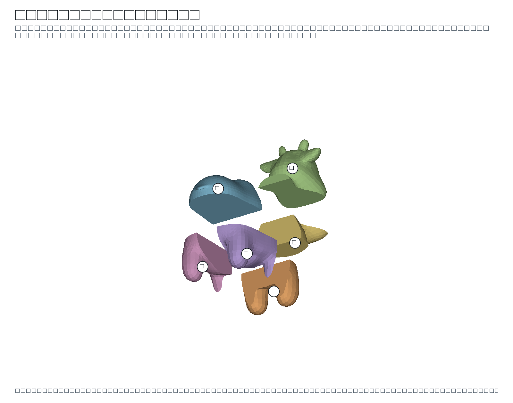
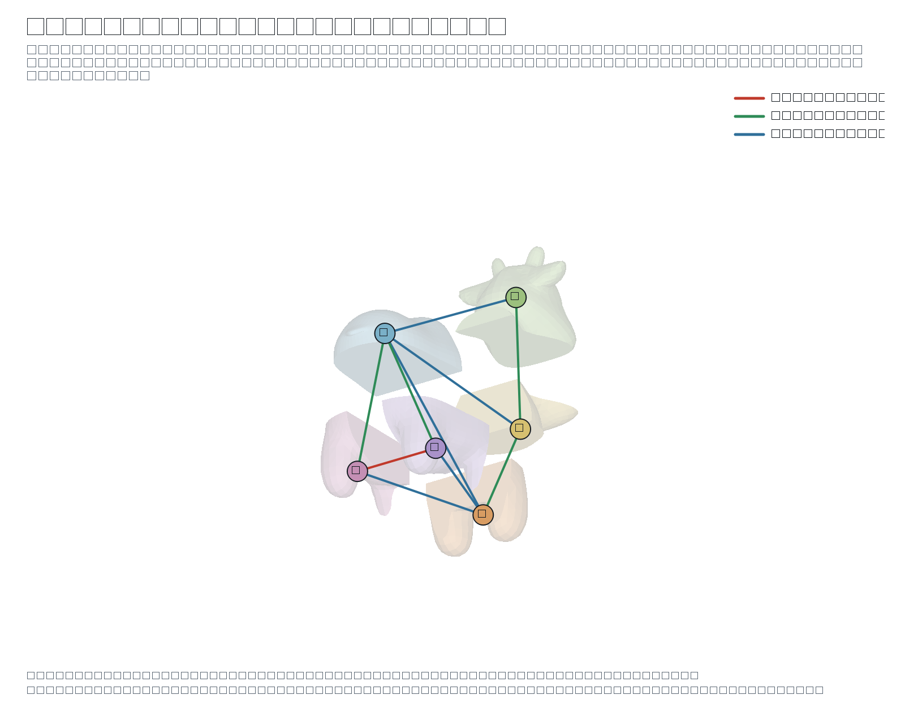
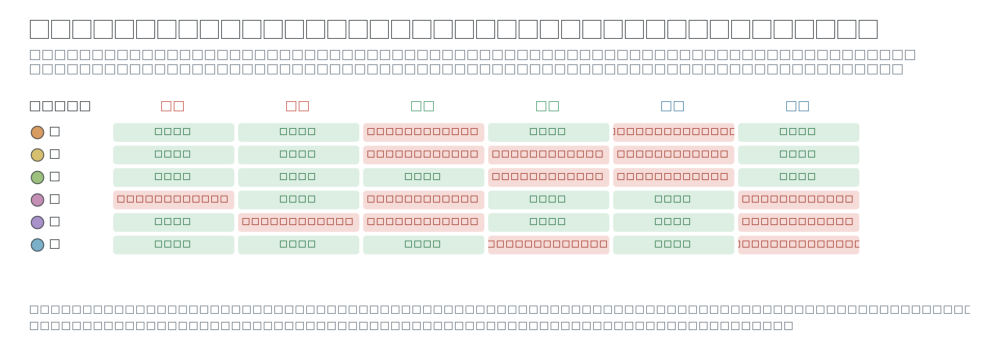
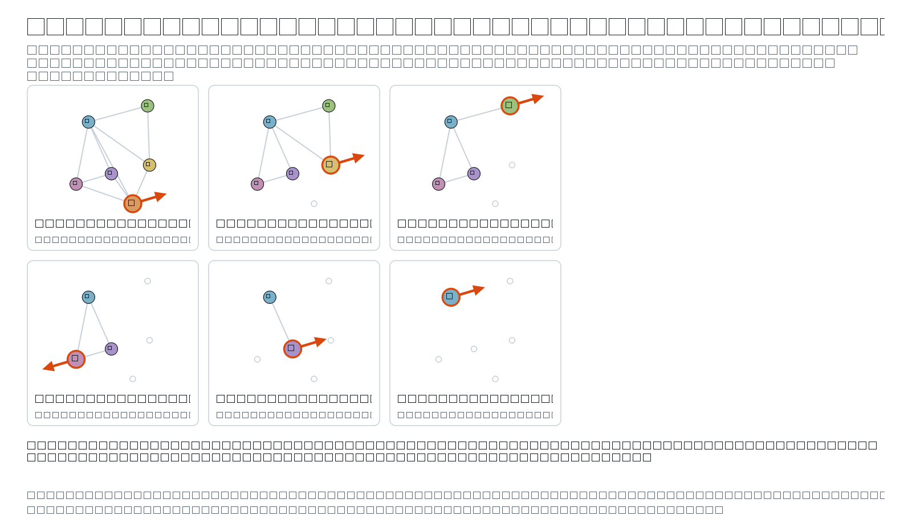

spot
Division report · 2026-09-22 13:21
The model
| Vertices | 2,930 |
|---|
| Triangles | 5,856 |
|---|
| Bounding box | 0.9431 × 1.69 × 1.718 |
|---|
| Watertight | yes |
|---|
| Volume (divergence) | 0.718259 |
|---|
| Volume (voxel fill) | 0.718606 · 100% of the divergence volume |
|---|
Two independent measures. The divergence integral counts every shell it is given, so a mesh with interior geometry reads high; the voxel fill uses parity down each column and reports what is actually solid. Them disagreeing is a fact about the model, not about the division.
The division
| Mode | Random |
|---|
| Divided | V-rep (bounding cage) |
|---|
| Pieces asked for | 6 |
|---|
| Cells produced | 6 |
|---|
| Pieces kept | 6 |
|---|
| Seed | 7 |
|---|
| Voxel grid | 53 × 94 × 96 = 478,272 voxels, 125,490 filled (26.2%), side 0.01779 |
|---|
| Trim (Elber §5) | 6 trimmed to the model, 0 empty cell(s) dropped, 0 failed |
|---|
| Joints | dovetails abandoned after the trim - every cut succeeded, but IRIT then failed to trim 1 piece(s) back to the model, which would have left them as raw boxes; the pieces were re-divided with flat cuts instead |
|---|
Time
| Voxelise the model | 191 ms |
|---|
| Choose the cuts | 187 ms |
|---|
| Extract the pieces | 1 ms |
|---|
| Trim to the model | 4,239 ms |
|---|
| Cut the joints | — |
|---|
| Draw the planner pictures | 442 ms |
|---|
| Total | 4,886 ms |
|---|
The pieces
| Count | 6 |
|---|
| Triangles, all pieces | 7,536 |
|---|
| Largest / smallest side | 0.9431 / 0.7749 · spread 1.22× |
|---|
| Volume, all pieces | 0.718259 · 100% of the model |
|---|
| # | origin X | origin Y | origin Z | size X | size Y | size Z | triangles | volume | % of model | closed |
|---|
| 0 | -0.3874 | -0.7338 | -0.2057 | 0.7749 | 0.573 | 0.3744 | 804 | 0.089986 | 12.5 | yes |
| 1 | -0.3849 | -0.1608 | -0.6381 | 0.7697 | 0.3732 | 0.8068 | 948 | 0.091276 | 12.7 | yes |
| 2 | -0.4716 | 0.2123 | -0.6689 | 0.9431 | 0.7413 | 0.8376 | 2,272 | 0.1818 | 25.3 | yes |
| 3 | -0.3873 | -0.7368 | 0.1687 | 0.3716 | 0.5751 | 0.8091 | 886 | 0.087282 | 12.2 | yes |
| 4 | -0.01563 | -0.7368 | 0.1687 | 0.4029 | 0.5751 | 0.8097 | 936 | 0.094589 | 13.2 | yes |
| 5 | -0.3874 | -0.1617 | 0.1687 | 0.7749 | 0.4864 | 0.8803 | 1,690 | 0.17332 | 24.1 | yes |
The assembly planner
| Shared faces | 10 |
|---|
| Neighbours per piece | 2 to 5 |
|---|
| Order found | yes |
|---|
| Assembly order | 5 (-X) → 4 (-X) → 3 (+X) → 2 (-X) → 1 (-X) → 0 (-X) |
|---|
assemblable under translational blocking; rotational/swept check pending
A division into boxes always has some piece free to leave, so a successful order here is expected and carries little information. The test starts to bite once joints restrict how pieces may move, or once a swept-volume check replaces straight-line blocking.
The planner, drawn

The pieces, pulled apart, numbered with the ids the planner uses.

Step 1 — every line joins two pieces that share a face, coloured by the axis that face is perpendicular to.

Step 2 — for each piece, which of the six straight moves are blocked, and by which neighbour.

Step 3 — the pieces taken off one at a time; reversed, this is the assembly order.